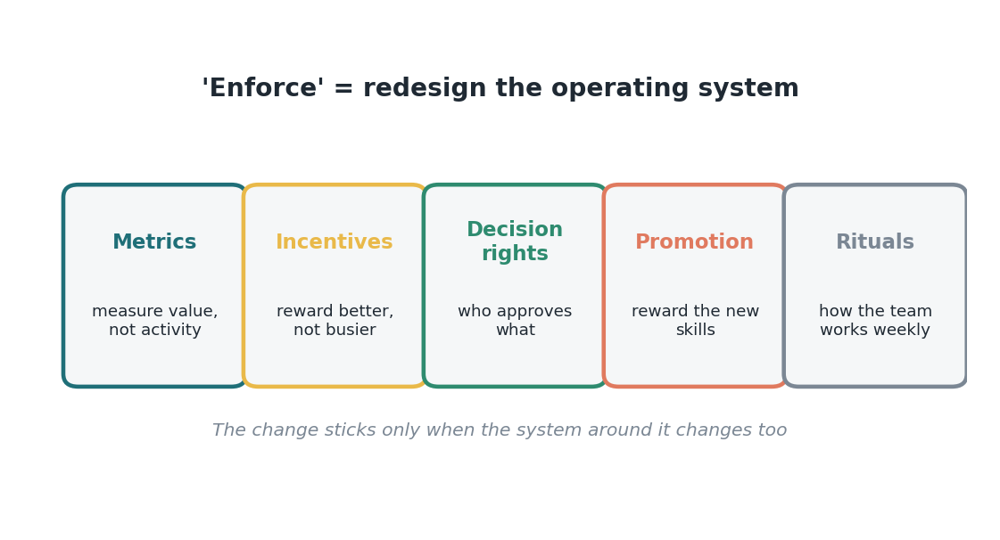

Issue 13 — Enforce: redesign the operating system, measure better not busier
I once watched a team do everything right. They learned a new agent-assisted way of working, they believed in it, they were genuinely better at their jobs for a few months. And then, slowly, the old ways crept back. Not because anyone decided to quit — but because everything around them still rewarded the old behavior. The metrics counted the old outputs. The praise went to whoever stayed latest. Promotion still favored the person who did it all by hand. The system quietly pulled them back to where they started.
That's the lesson of the last stage of the playbook, the one called Enforce — and it's badly named, because it's not about forcing anyone. It's about redesigning the system so the new way is the natural way. If you change how people work but not what you measure, reward, and promote, the system wins and the change loses. Enforce means updating the whole operating system: metrics, incentives, decision rights, promotion criteria, and the little weekly rituals that shape how a team actually behaves.
The most concrete piece of this is measurement, and it's where I want us to be brave. For decades we've measured busyness — hours worked, volume processed, tickets closed. In a world where an agent can process infinite volume, those metrics become not just useless but harmful, because they reward the wrong thing. We have to measure better, not busier: cycle time, quality and error rates, value delivered per workflow, cost per task, and how much human-review burden a process carries. Not logins, not licenses, not how many prompts someone typed.

Think about what that shift signals to a person. If we keep measuring volume, we're telling people the machine is their competitor, and they will lose. If we measure quality, judgment, and value, we tell them the machine is their tool, and their thinking is the point. The metric is a message. Change the metric and you change what people believe their job is — which is the whole game at this stage.
The rituals matter more than they sound, too. The weekly team meeting that used to review volume could instead review what we learned and improved. The recognition that is used to celebrate the latest-night hero could celebrate the person who redesigned a process so no one has to stay late. Small, repeated signals like these are how a new way of working stops being an initiative and becomes just "how we do things here."
I'll be honest that this stage is the hardest, because it asks leaders to change the very systems that made them successful. But it's also the stage that determines whether everything before it holds or fades. If we've asked people to learn, believe, and grow, we owe them a system that rewards it. Otherwise we're asking them to swim against a current we control — and that's not fair, and it doesn't last.
Sources
- Enforce = redesign metrics, incentives, decision rights, promotion, rituals; measure better/faster/safer — McKinsey (Aug 7, 2026).